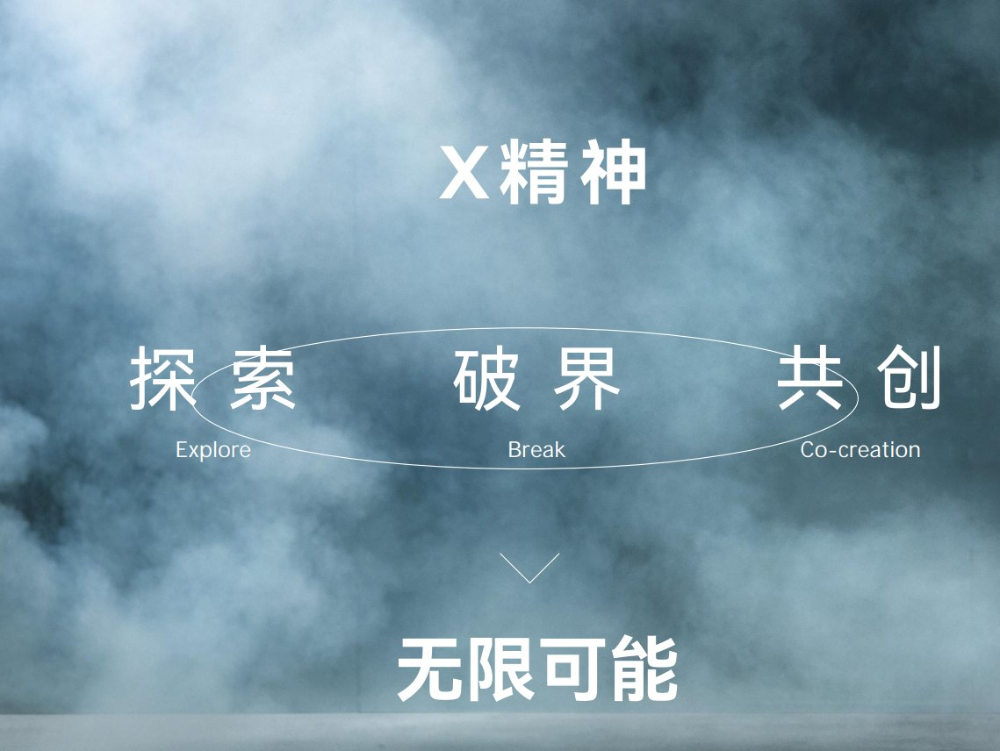
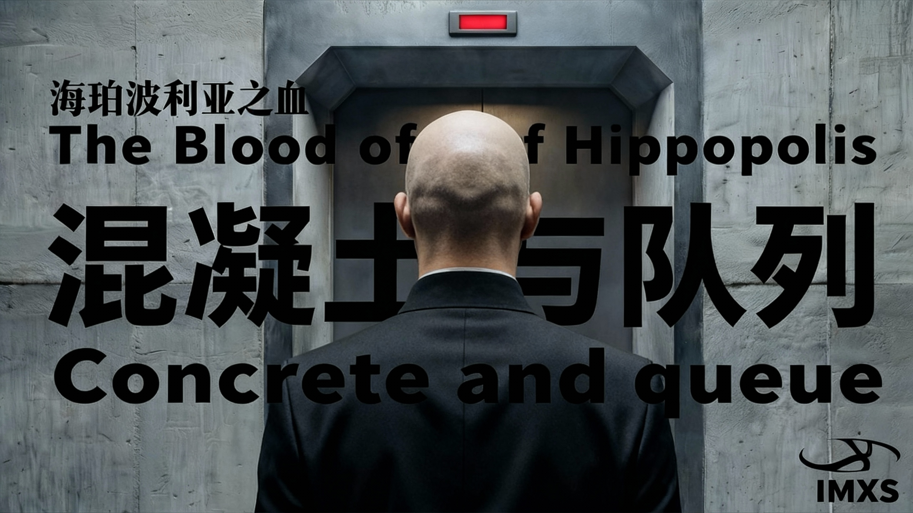
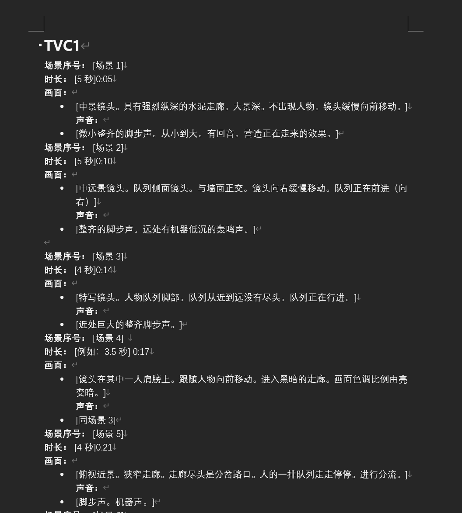
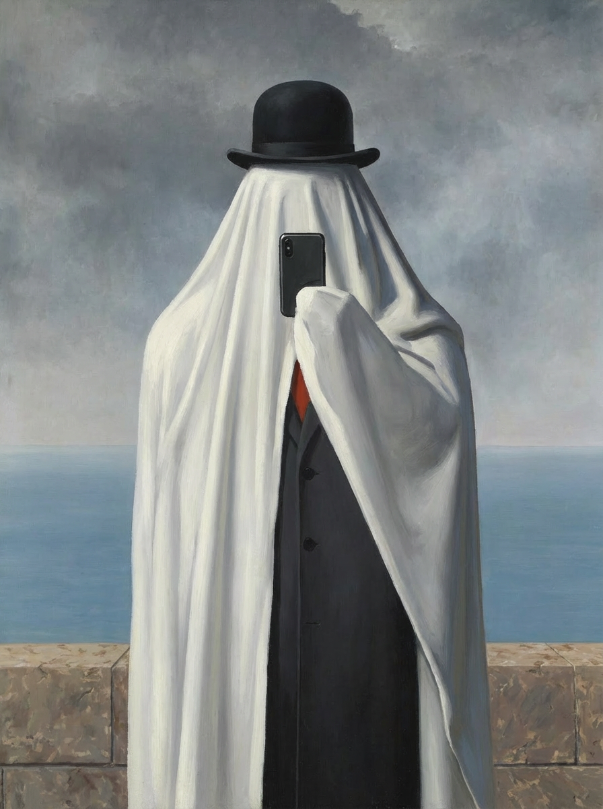
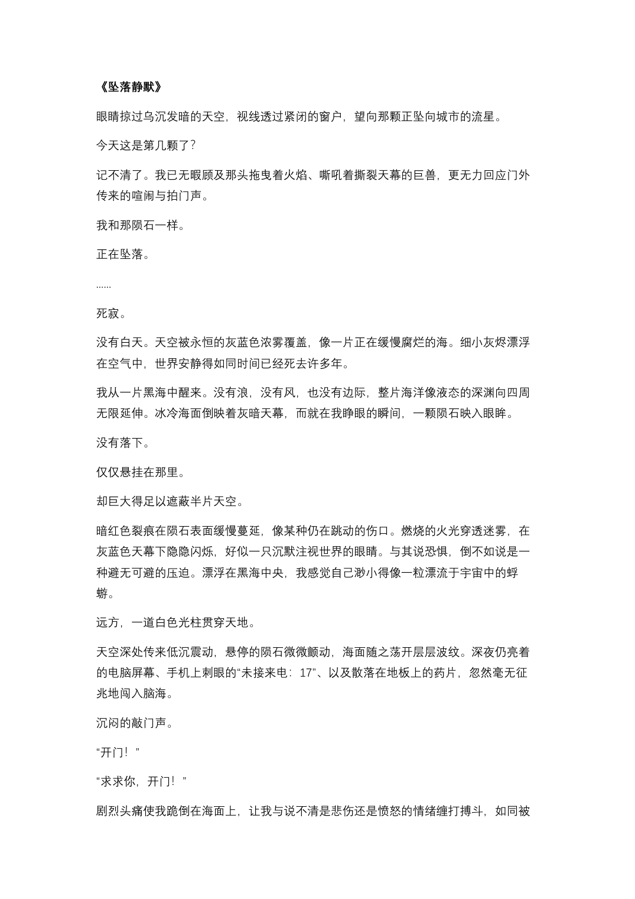
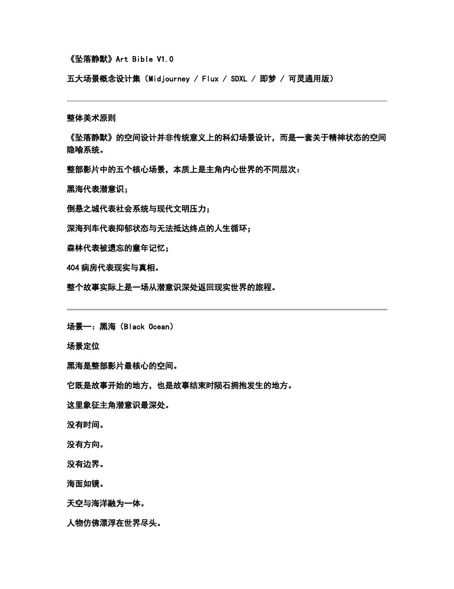
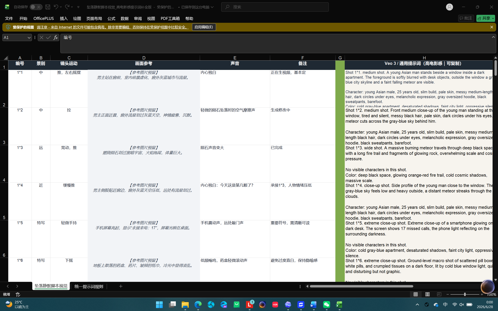
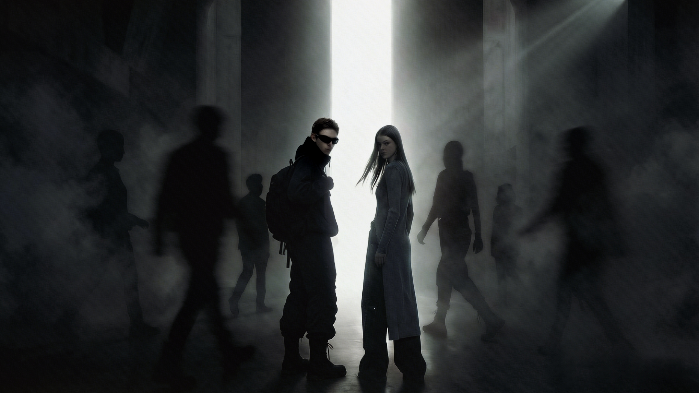

品牌调性驱动的内容包装
项目起点：品牌世界观、X 精神、反叛、异化、觉醒。
我做了什么：品牌调性识别、关键词提炼、内容选题与发布包装。
AI 辅助了什么：图像与视频生成、视觉方向推演。
最后形成：品牌视觉、首图文案和社媒展示。
查看 IMXS 详情 →PROJECT 02 / AIGC WORKFLOW
这三个项目都使用了 AI 生成工具，但它们的起点不同。IMXS 的起点是品牌：我要先理解它的气质，再决定怎样呈现。《坠落静默》的起点是故事：我需要把长期积累的心理感受整理成一条可以被拍出来的叙事线。被单人的起点是产品：我想把一种年轻人熟悉的疲惫、荒诞和自嘲，变成一个可以延展的 IP 形象。
THREE PATHS
项目起点：品牌世界观、X 精神、反叛、异化、觉醒。
我做了什么：品牌调性识别、关键词提炼、内容选题与发布包装。
AI 辅助了什么：图像与视频生成、视觉方向推演。
最后形成：品牌视觉、首图文案和社媒展示。
查看 IMXS 详情 →项目起点：长期心理感受、关系经验、《思感集》材料。
我做了什么：主题判断、剧本手改、场景与镜头拆解。
AI 辅助了什么：扩写、润色、视觉概念与 Prompt 整理。
最后形成：剧本、场景 Bible、镜头拆解和 Prompt。
查看坠落静默详情 →项目起点：打工人情绪、“体面发疯”、meme 语境。
我做了什么：IP 概念、角色筛选、产品与传播延展。
AI 辅助了什么：角色形态、姿态与场景方向生成。
最后形成：角色形象、周边、表情包和海报。
查看被单人详情 →CASE A / IMXS
IMXS 不是从一张图开始的，而是从品牌气质开始的。我先整理它的关键词：冷感、秩序、反叛、异化、觉醒，再判断这些词应该出现在什么样的场景、光线、人物状态和发布语言里。AI 生成只是中间环节，最后还需要把画面变成首图、短句、标签和系列表达。



WORKFLOW TABLE
| 阶段 | 我的判断 | 输出 |
|---|---|---|
| 品牌调性 | 冷感、反叛、异化、觉醒 | 情绪关键词 |
| 内容选题 | 如何把 X 精神转化为可观看内容 | 主题方向 |
| 视觉生成 | 用 AI 辅助建立工业、秩序、压迫感 | 图像 / 视频 |
| 发布包装 | 将视觉成果转化为首图、短句、标签 | 社媒表达 |
COPY ASSET
用于工业感、压迫感和身体异化的标题短句。
用于先锋视觉短片封面、视频描述和评论区引导。
用于系列标签和强情绪视觉收束。
这个项目让我更清楚地意识到：AI 图像不是内容的终点。它还需要被整理成适合品牌、平台和观看场景的表达。
回到专题开头 ↑CASE B / FALLING SILENCE
《坠落静默》最早不是一个 AI 项目，而是一种长期存在的感受：人在压抑之后，好像会慢慢向自己坠落。
这个故事里的沉默、边界、自我逃避、控制、被看见和最后的和解，都能在《思感集》的长期记录中找到来源。AI 参与的是扩写、润色、提示词和影像生产，但故事方向不是 AI 决定的。
查看它在《思感集》中的来源 →HUMAN + AI
| 环节 | 人工判断 | AI 辅助 |
|---|---|---|
| 核心主题 | 压抑、自我逃避、和解 | 辅助生成表达角度 |
| 故事结构 | 确定意识世界和现实回归 | 辅助扩写段落 |
| 情绪边界 | 判断哪些情绪必须保留 | 辅助语言润色 |
| 场景设定 | 黑海、倒悬城市、深海地铁、森林、404 病房 | 辅助视觉概念延展 |
| 影像生产 | 决定画面叙事功能 | 辅助生成提示词和镜头方案 |
VERSION ARCHIVE
| 版本 | 作用 | 展示重点 |
|---|---|---|
| 手改 1.0 | 确立核心故事和主要场景 | 黑海、倒悬城市、深海地铁、森林、医院 |
| AI 润色 3.0 | 优化语言连贯性、氛围和叙事节奏 | 更完整的段落、情绪递进、画面感 |
| 手改 2.0 | 人工修正主题、节奏、细节和语气 | 保留个人判断与叙事控制 |
| 最终版 | 形成可用于影像生产的剧本母版 | 剧本 + 世界观 + 场景设定 + 核心隐喻 |
WORLD BIBLE
一个长期压抑自我、最终精神崩溃的男人，在自己构建出的意识世界中不断经历“陨石坠落”，随着世界一次次崩塌，他逐渐找回被压抑的记忆，最终选择拥抱最后一颗陨石，与真实的自己和解。
| 场景 | 叙事功能 | 视觉关键词 | AI 影像任务 |
|---|---|---|---|
| 黑海 | 潜意识初始状态 | 无边黑海、灰蓝浓雾、悬挂陨石 | 建立主视觉与开场氛围 |
| 倒悬城市 | 社会压力与现实异化 | 空无一人、倒悬建筑、移民广告 | 构建宏大异化世界 |
| 深海地铁 | 精神下沉、封闭与逃避 | 无人列车、深海废墟、药盒、鲸鱼 | 做运动镜头与情绪推进 |
| 梦核森林 | 童年与柔软记忆 | 褪色风筝、旧电视、残缺房屋 | 从冷感转向情绪温度 |
| 404 病房 | 现实侵入与自我对峙 | 心电仪、病床、未接来电 | 完成现实揭示与结尾转折 |
SHOT LIST SAMPLE
| 镜头 | 内容 | AI 生成提示方向 |
|---|---|---|
| Shot 01 | 无人地铁车厢，灯管闪烁 | empty subway car, flickering fluorescent light, cold blue-gray tone |
| Shot 02 | 座位和地面散落药盒 | scattered medicine boxes, dim light, psychological thriller mood |
| Shot 03 | 车窗外深海城市废墟 | underwater city ruins, floating skyscrapers, silent deep sea |
| Shot 04 | 鲸鱼穿过高楼之间 | giant whale swimming between ruined skyscrapers |
| Shot 05 | 陨石红光照进车厢 | red meteor light entering subway car, surreal cinematic lighting |
这个项目留下的是一套从感受到剧本、再从剧本到镜头的整理过程。AI 帮我推进文本和影像，但它没有替我决定这个故事要去哪里。
回到专题开头 ↑CASE C / DOE AND FRIENDS
被单人来自我对“疲惫但还要体面”的观察。它不是一个英雄角色，也不是一个明确的人设，而更像一个情绪容器：蒙着被单、没有表情、看起来荒诞，但又很像某种日常状态。后来我用 AI 生成不同形态，再继续做角色筛选、周边延展和视觉物料。


PRODUCT TABLE
| 阶段 | 我的判断 | 输出 |
|---|---|---|
| 情绪观察 | 打工人疲惫、体面发疯、荒诞日常 | 用户洞察 |
| IP 设定 | 一个蒙着旧被单、没有表情的情绪容器 | 概念设计 |
| AI 生成 | 多造型、多姿态、多场景尝试 | AIGC 生成 |
| 产品化 | 表情包、周边、海报、社媒物料 | 产品设计 |
| 传播表达 | meme 语境、年轻人情绪共鸣 | 内容转化 |
这个项目更接近产品设计练习：从一种情绪出发，慢慢形成角色、形态、物料和可延展的视觉系统。
回到专题开头 ↑SUMMARY
| 项目 | 输入 | 方法 | 输出 | 最后形成 |
|---|---|---|---|---|
| IMXS | 品牌调性 | 选题 + 视觉包装 | 海报 / 视频 / 发布文案 | 品牌内容包装 |
| 坠落静默 | 心理积累与个人感受 | 剧本 + 场景 + 镜头 | AI 影像叙事系统 | 一套从感受到镜头的整理过程 |
| 被单人 | 社会情绪观察 | IP 概念 + AI 生成 | 产品形态 / 周边 / 表情包 | 可继续延展的角色和物料 |
这三个项目让我逐渐分清了 AI 生成内容的三种不同起点：品牌、叙事和产品。IMXS 从品牌调性开始，《坠落静默》从心理经验开始，被单人从社会情绪开始。它们使用的工具相似，但判断方式并不相同。
EVIDENCE TODO





SUMMARY
我在这些项目里使用 AI，但没有把判断交给 AI。真正重要的是先知道内容从哪里来：一个品牌的气质，一个人的心理经验，或者一群人的共同情绪。工具帮助我生成、整理和推进，方向仍然由我决定。
本网站由我独立策划、整理和完成。过程中使用 ChatGPT、Codex 等模型辅助结构梳理、文字修改和代码实现；内容判断、材料取舍和最终表达由我负责。